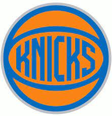
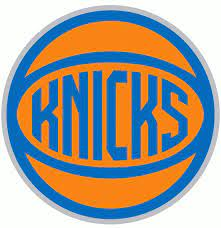

History
 

The Knicks are one of the most historic franchises in all of sports, with some of the best basketball players of all time once wearing the orange and blue jerseys. Whether it was Willis Reed and Walt "Clyde" Frazier in the 70s or Patrick Ewing in the 90s, the Knicks embodied greatness. Since the departure of Ewing in 2000, it has een very hard for them to get back to a championship level. Prior to the arrival of Carmelo Anthony, the Knicks held the worst combined record sice the start of the century (2000-2011). The arrival of "Melo" rejuvinated the Garden and brought back excitement for New Yorkers. Melo brought the Knicks to the second seed in the Eastern Conference in 2013, and led them to their longest playoff run since Ewing's era. Their incredible season ended early with a loss to the Indiana Pacers in the playoffs, but it was still one of the most memorable seasons in recent memory for the Knicks. A new playoff drought began after 2013, but has since come to an end with the resurgence of the Knicks in 2021.